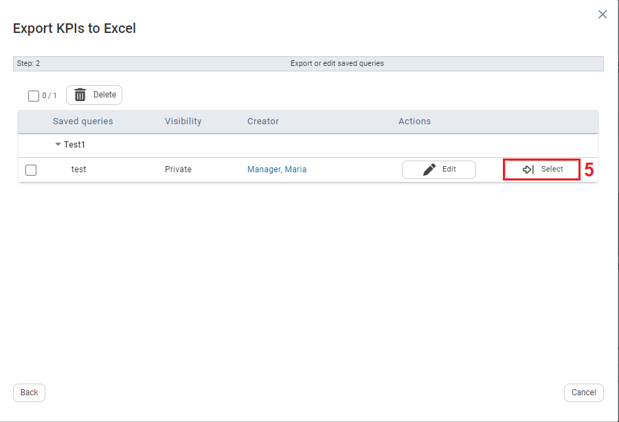

To Access Saved Excel Export Queries
| 1 | On the Left navigational panel, click Data. |
| 2 | Click Data Management. |
| 3 | Click Export to Excel. The Export KPIs to Excel window opens. |

| 4 | Click Saved Queries. |

| 5 | Click . The Saved Queries are downloaded to your local downloads folder. |